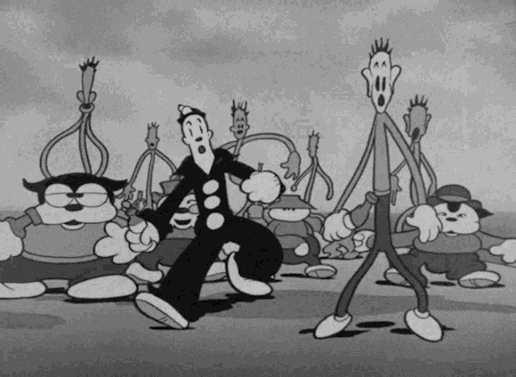
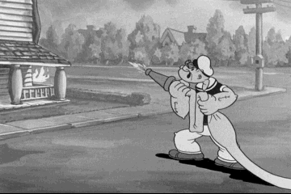
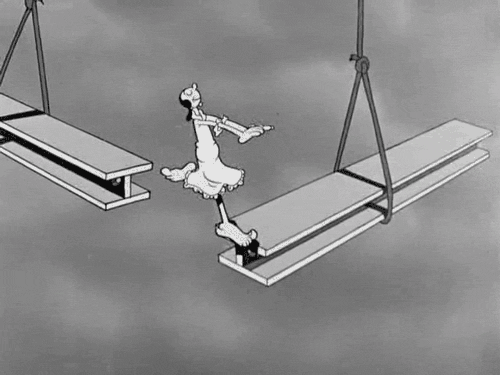
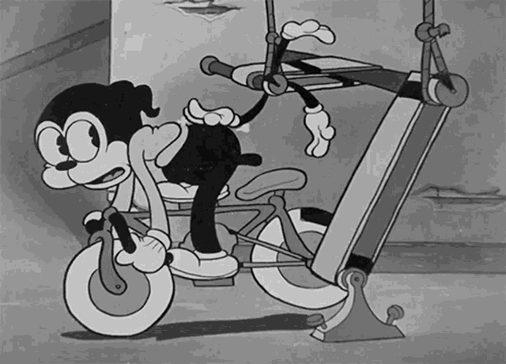

Rubber hose-style animation is one of the greatest and strangest things ever, and I have been happy to see that it's making a comeback. It all started a little over a century ago with the likes of Betty Boop and Popeye and Felix the Cat, and Mickey Mouse. An instantly recognizable style; surreal, trippy, cute, with an underlying layer of dark disquiet: this is absolutely not how any person or animal moves! it is an alien movement, and yet! and yet! Weird anthropomorphic characters wearing big white gloves doing the most insanely surreal shit you personally could never possibly be high enough to dream up. What was in the waters in those days.
I need to remind myself that my limbs are not actually made of rubber. Specifically, my left knee does not a good pivot make.
This kind of goes back to my version of the Bruce Lee Be Water philosophy, but this is an example of what NOT to do. And absurdly, sometimes I make myself dizzy, flowing around the place. No seriously. It's seriously silly and unnecessary. I need to calm that shit down.
I am not a rubber hose animation! I am a FREE MAN!
— (Not) The Prisoner
Yes, the impetus for this post is that my left knee has been sore. Just a bit. Nothing that won't go away as long as I don't twist into corkscrews, such as I am wont to do.


